Beyond the Lab.
When I'm not writing papers or debugging ROS nodes, I spend my time exploring soundscapes, live music, and the Rocky Mountains.
Visual Memory
Capturing moments from hiking trails, mountain vistas in Rocky Mountain National Park, architectural travels across the US, and everyday scenes from the lab and beyond.
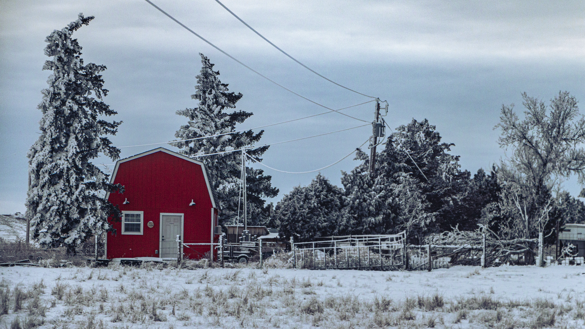


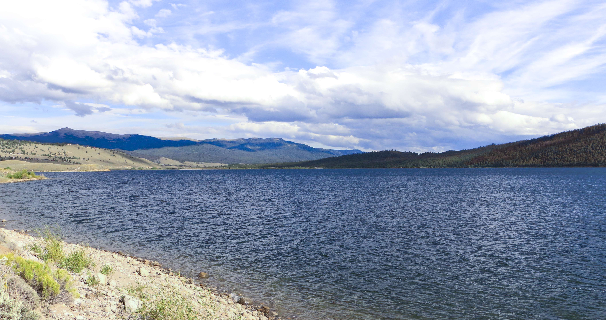
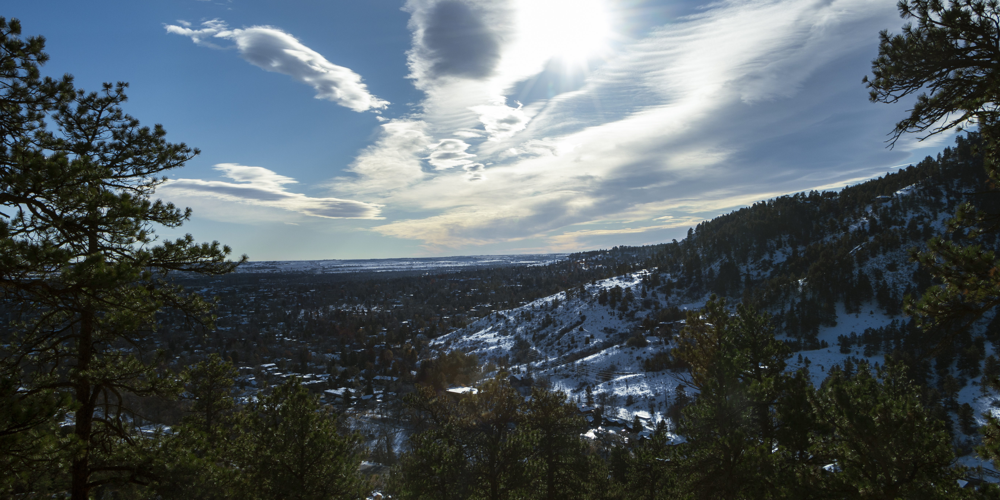
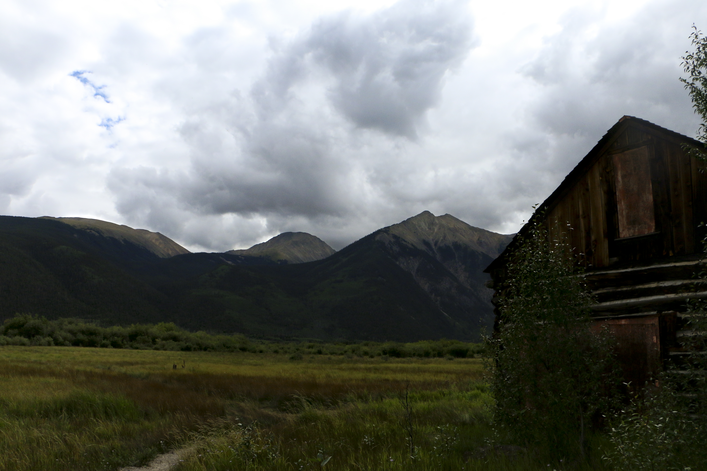
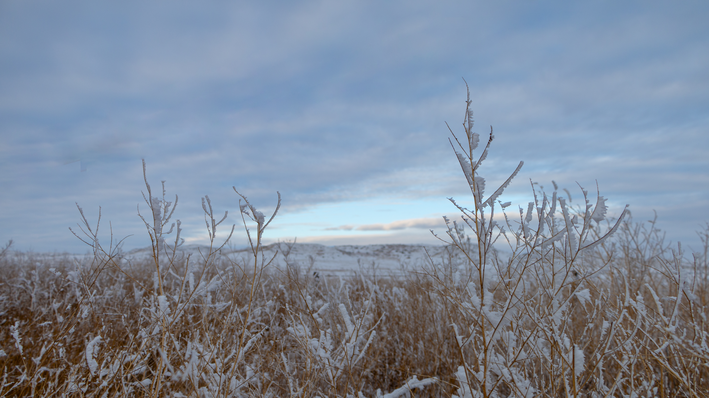
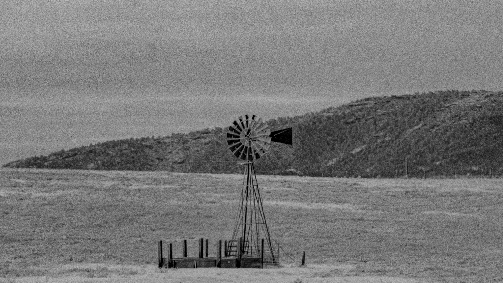

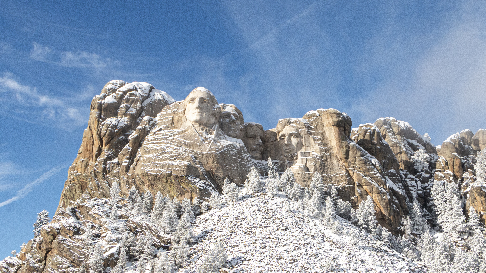
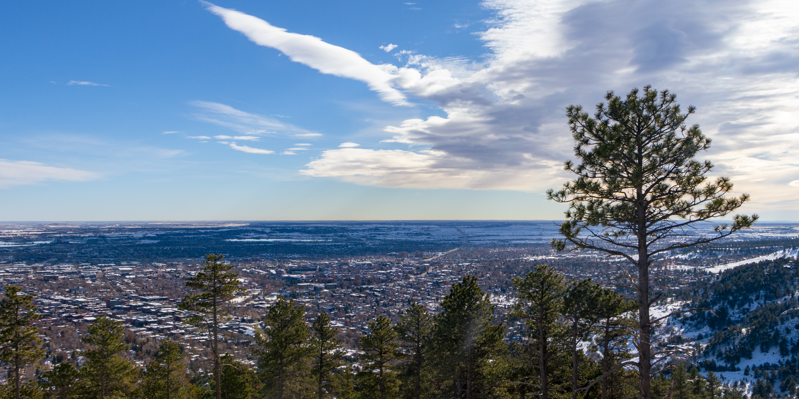

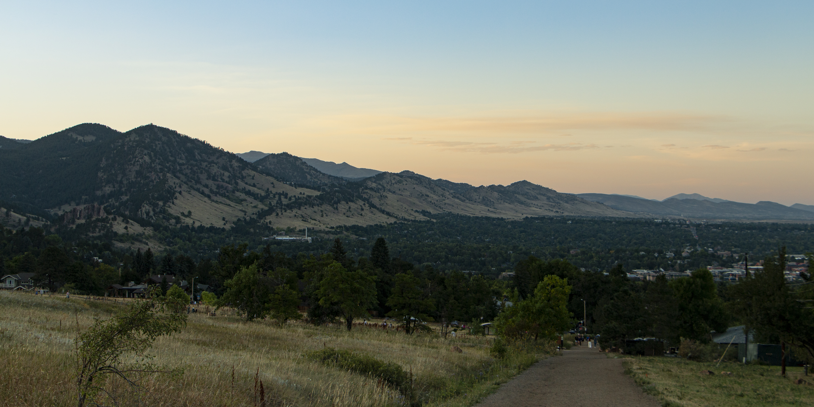
Field Notes
Snapshots from grad school, robotics labs, and life in Colorado.

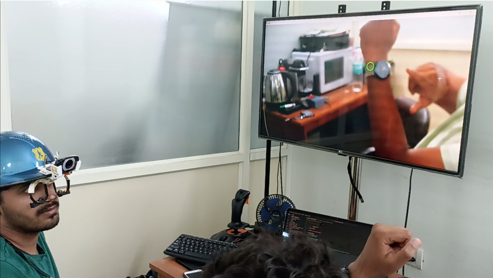

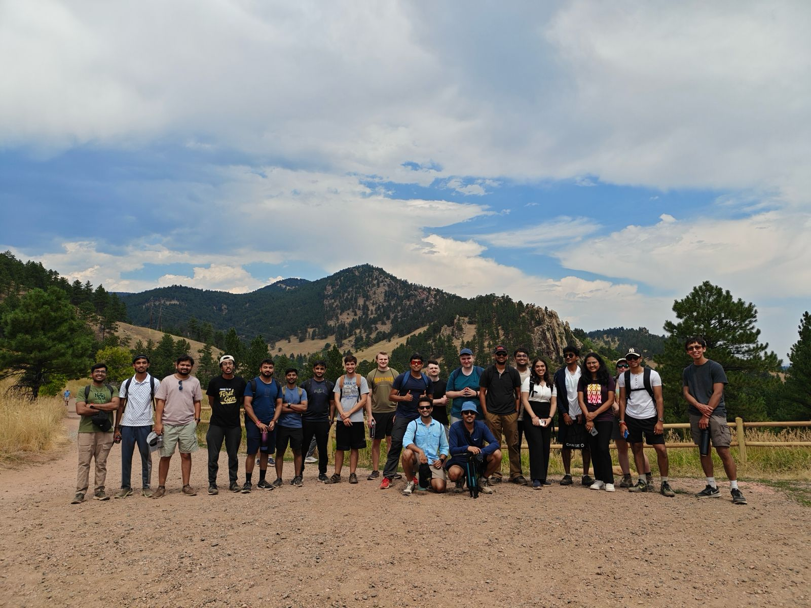
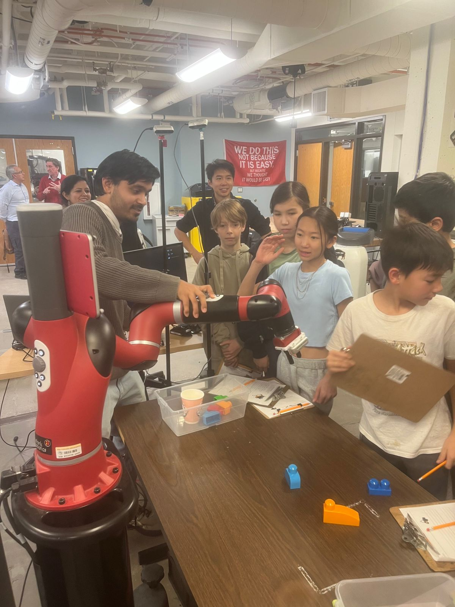